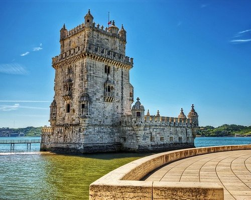
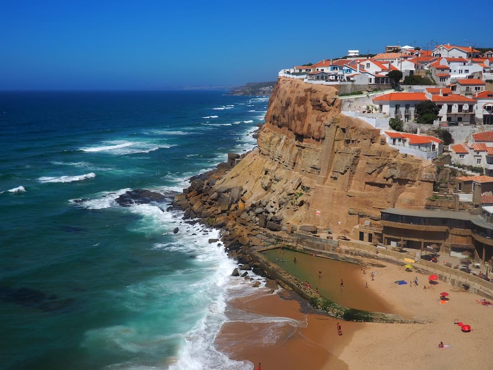

Lizbona oferuje bogaty zbiór zabytków 🏛, które zachwycają zarówno architekturą, jak i historią. Warto odwiedzić imponującą wieżę Belem, symbol dawnej potęgi morskiej Portugalii, oraz klasztor Hieronimitów ⛪️, który jest jednym z najpiękniejszych przykładów stylu manuelińskiego. Kolejnym niezwykłym miejscem jest Zamek Świętego Jerzego 🏯, skąd rozpościera się zapierający dech w piersiach widok na miasto. Lizbona to także centrum sztuki, z licznymi muzeami, galeriami i zabytkowymi dzielnicami, takimi jak Alfama, które przenoszą w czasie.
Lizbona, położona nad Oceanem Atlantyckim 🌊, zachwyca nie tylko swoim urokiem, ale także pięknem naturalnym. Plaże w pobliskim Cascais i Estoril oferują idealne warunki do wypoczynku ☀️ i uprawiania sportów wodnych 🏄🏻♂️. Miasto ma wiele punktów widokowych, takich jak Miradouro de Santa Catarina, z którego można podziwiać zachody słońca nad rzeką Tag. Przyroda otaczająca Lizbonę jest różnorodna, z malowniczymi wzgórzami, parkami i ogrodami, które zapewniają chwile relaksu w sercu tętniącego życiem miasta.

Aby dobrze przygotować się na weekendowy wyjazd do Lizbony, przy pakowaniu, polecam mieć na uwadze te parę rzeczy:
Dokumenty
- Paszport lub dowód osobisty
- Bilety lotnicze (wydrukowane lub w telefonie)
- Ubezpieczenie podróżne (wydruk lub elektroniczna kopia)
Akcesoria
- Okulary przeciwsłoneczne
- Kapelusz lub czapka (na słońce)
- Mała torba na ramię lub plecak
Sprzęt elektroniczny
- Telefon i ładowarka
- Powerbank (przydatny w trakcie zwiedzania)
- Aparat fotograficzny (opcjonalnie)
Inne
- Przewodnik lub mapa Lizbony
- Notatnik i długopis
Odzież
- T-shirty lub bluzki (2-3 sztuki)
- Krótkie spodenki lub spódnice (1-2 pary)
- Sukienka lub elegancka koszula na wieczór
- Lekka kurtka lub sweter na chłodniejsze wieczory
- Strój kąpielowy (jeśli planujesz plażowanie)
Higiena osobista
- Kosmetyki (szampon, żel pod prysznic, mydło)
- Krem przeciwsłoneczny
- Szczoteczka i pasta do zębów
- Ręcznik (może być przydatny na plaży)
Obuwie
- Wygodne buty do chodzenia
- Klapki lub sandały na plażę
- Eleganckie buty na wieczór (opcjonalnie)
| Koszty weekendowego wyjazdu do Lizbony | |
|---|---|
| Wydatek | Koszt |
| Bilety lotnicze | 600 zł |
| Zakwaterowanie | 500 zł |
| Wyżywienie | 280 zł |
| Transport | 120 zł |
| Atrakcje | 240 zł |
| Łącznie | 1810 zł |